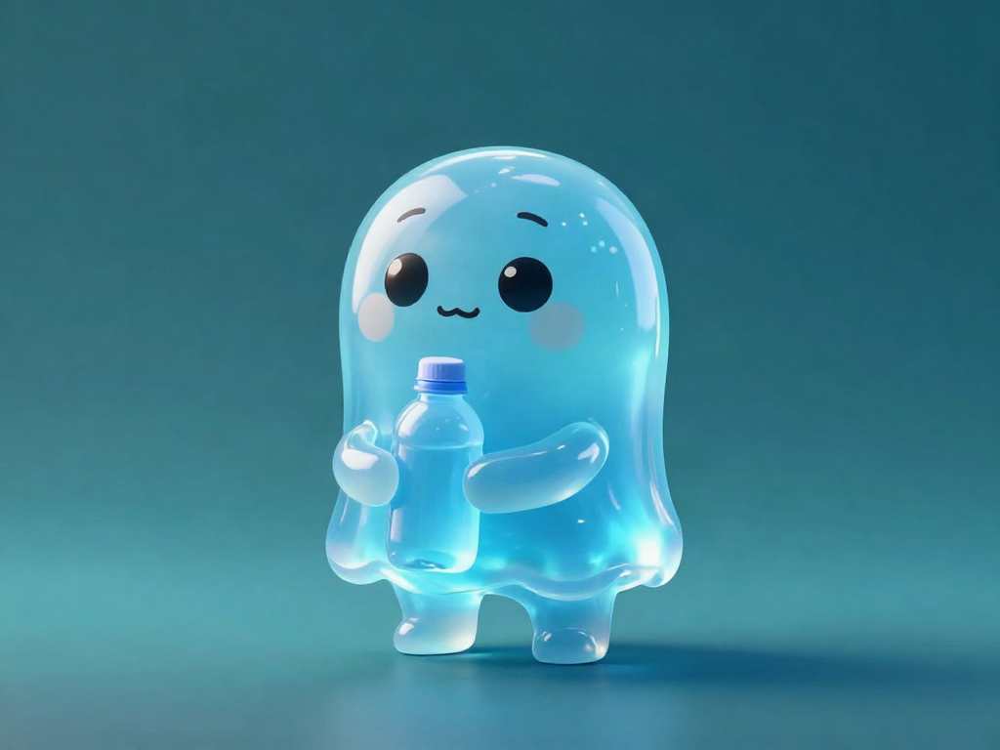
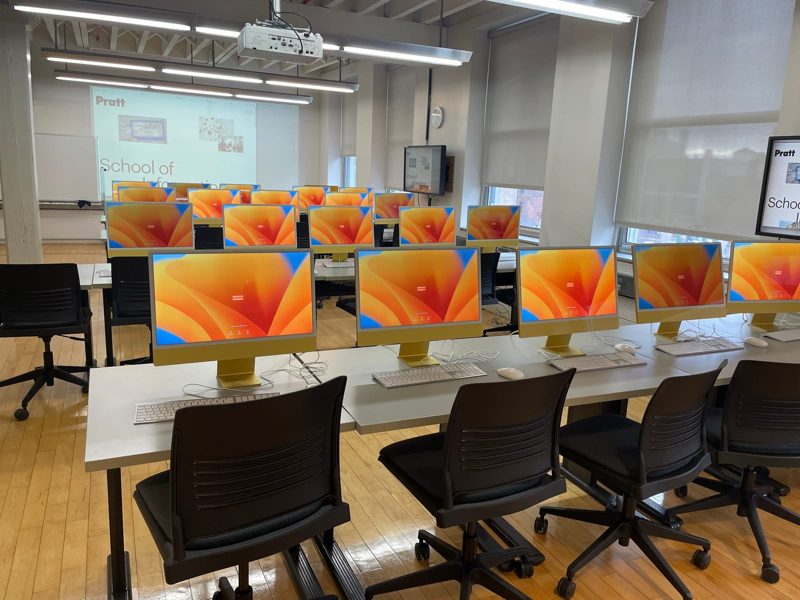
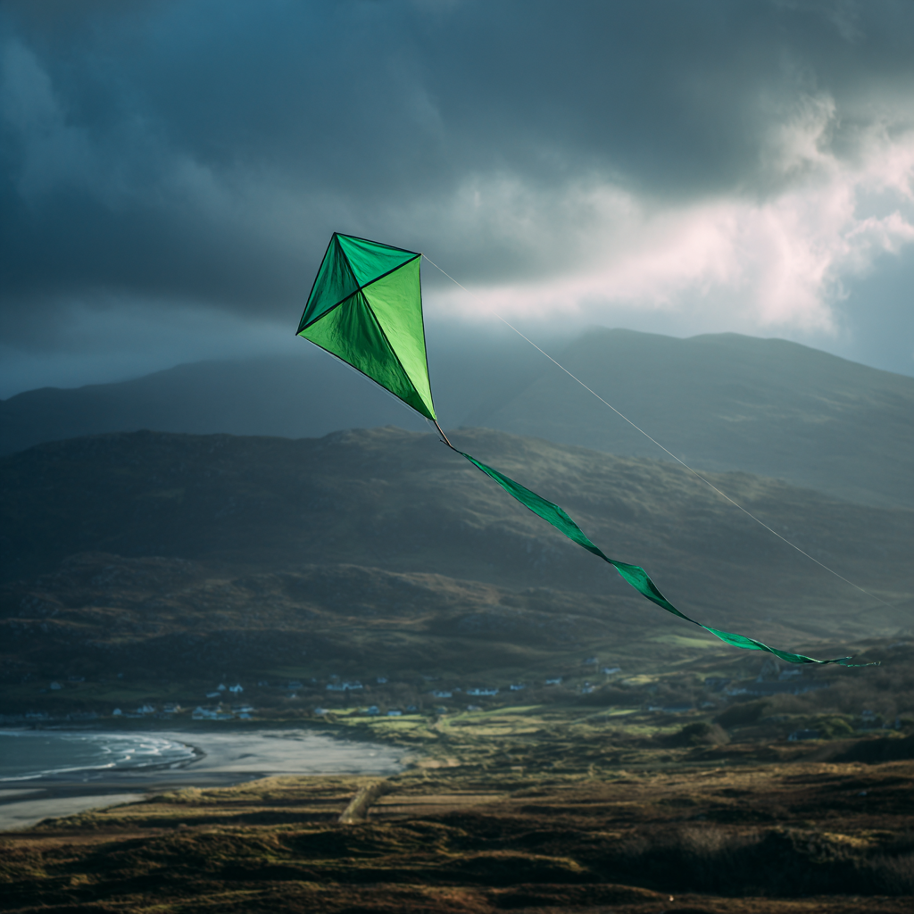
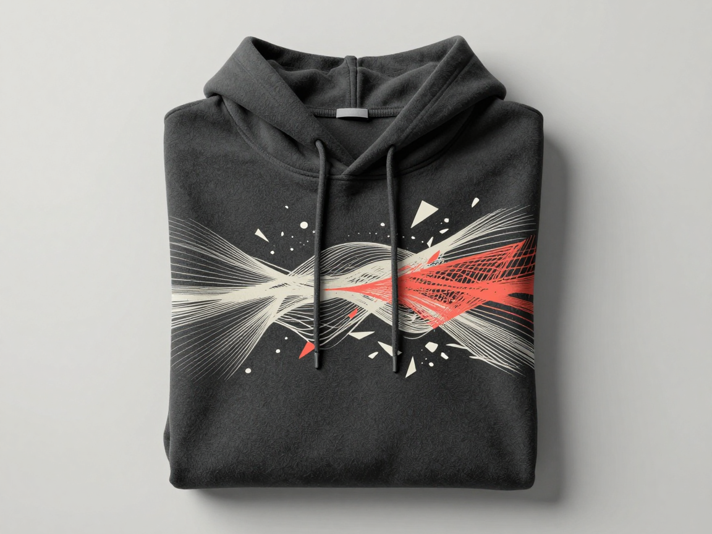

Ken BaiCreativeTechnologist
Building AI workflows, generative systems, creative infrastructure, human-in-the-loop tools.
Great creative environments are designed with intent.
12+ years at the intersection of design, technology, and AI systems, building the infrastructure that lets creative people do their best work. Working within creative technology operations as an analyst at Pratt Institute and leading White Crane Design LLC. AI amplifies judgment.
Human in the loop, always.
Selected work

Mobile digital pet · Expo / React Native · 2026
A mobile pet whose wellbeing is derived from your own health, with auto-tracked steps and tapped water drive a mood that plays out as real-time animation. Health you can actually watch. The result: steps feed the mood engine straight from the device, zero manual logging.

Art-direction studio · Local Z-Image engine · RTX 5070 · 2026
My art-direction studio with its own local Z-Image-Turbo engine, a FastAPI async queue on an RTX 5070. The result: zero per-image cost, unmetered generation — the studio owns its engine.
Scalable infrastructure · AI × Design · 2024 — 2026
A multi-agent AI system that simulates presenting to a real design jury. Three critics with distinct personas, each with a different voice, generate visual feedback as they critique. The result: rebuilt in 2026 on a model-per-persona stack — GPT-5 mini, Claude Opus 4.5, Gemini 3 Pro.

Creative Technology Analyst, Mac Systems · Pratt Institute · 2024 — Present
How institutional financial crisis forced the choice to build rather than buy AI capability, and how the institution scaled its AI capability while keeping its autonomy and culture intact. The result: 250+ Apple endpoints under management via Jamf Pro and Apple School Manager.

Social enterprise · Ireland · 2025
A kite-as-metaphor mark and tagline system for a social enterprise backing community-led sustainability. Playful but refined, it lifts without being literal. The result: the identity is live in production at greenkite.ie.

Live storefront · 2023 — Present
The commerce arm of White Crane Design. Anime-inspired apparel where generative tools assist, but humans do the designing. Concept to shirt, ready to buy. The result: a live Square storefront selling the studio's own line.
Bridging creativity and technology. Tools that empower humans, not replace them.
- Directing creative strategy, identity, and design systems, turning business goals into coherent brand experiences.
- Prototyping generative AI workflows and LLM-integrated pipelines that expand what small creative teams can ship.
- Launched the White Crane apparel brand, from concept through production, with AI-assisted but human-driven design.
- A human-in-the-loop philosophy throughout.
- Supporting creative technology infrastructure for a top design school.
- Architecting and managing a 250+ Apple endpoint ecosystem via Jamf Pro and Apple School Manager.
- Integrating generative AI tools and Python automation into lab systems to remove friction for makers.
- Partnering with faculty to align infrastructure with curriculum, accessibility, and institutional policy.
- Leading a cross-functional team of 20+ staff across IT infrastructure, AV systems, and technical operations.
- Learning creative environments at scale through IT infrastructure, AV systems, and technical operations.
Background
Education
Formal training + certs · degree first, detail on demand
- 2027 · ExpectedMaster of Professional Studies, Design ManagementPratt Institute
- 2012Bachelor of Fine Arts, Interior DesignPratt Institute
- Google AI Essentials
- Jamf Certified Tech
- Jamf Certified Associate
- Apple Certified Support Professional
Detail by group
Degrees
MPS Design Management (exp. 2027) · BFA Interior Design (2012), both Pratt Institute. Trained as a designer, operating as a builder.
Credentials
AI: Google AI Essentials · Python. Platform: Jamf Tech + Associate · Apple CSP macOS 11.
Skills
Go-to tools · detail by group on demand
- Figma
- Adobe Suite
- Canva
- Claude
- GPT
- Gemini
- ComfyUI
- Flux
- Python
- Git/GitHub
- APIs
- Jamf Pro
- MDM
- Asana
- MCP
Detail by group
Design
Figma · Adobe Suite: product, brand, and production art. Systems first, pixels with intent.
AI Systems
Claude · GPT · Gemini · ComfyUI · Flux · MCP: multi-model critique, prompt craft, and local inference pipelines.
Ops & Infra
Python · Jamf Pro · MDM · Asana: fleet, automation, and delivery rhythm that keep studios running.
Let's build.
Select collaborations in AI workflows, creative infrastructure, and brand systems. Tell me what you are making.